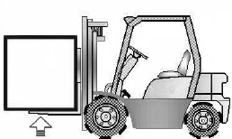

To use the weight scale option, you need to perform the following initial settings: i) zero
adjustment as unloaded (ZERO), ii) inputting a reference load (LOAD), and iii) setting the
maximum rated load (RLOAD).
This option enables the operator to measure and limit the weight of the load using the LCD
display.
Pressing the MODE button moves you from the normal display to the load scale mode.
Zero Adjustment as Unloaded (ZERO)
While keeping the vehicle unloaded, slowly raise its
forks, or attachment, approximately 30 cm from the ground, wait for 4–6 seconds, and then
hold the “MODE” button for 2 seconds. The ZERO lamp (6) will light up, and the weight will
be displayed in the form of “ - - - - .”
Then, hold the ENTER button for 1 second to
finish this step (The ZERO lamp (6) will turn off and the number indicator will be set to
zero).
Inputting a Reference Load (LOAD)
Prepare a load whose weight is accurately known and
falls within 30%–50% of the vehicle’s maximum rated capacity, or a load you usually handle
(It is recommended to use a load whose weight has been proven by a legal measuring
instrument).
E.g., 15-ton capacity forklift: 4,500–7,500 kg load
30,000-lb capacity
forklift: 9,000–15,000 lb load
Put the mast vertical, raise the load slowly
approximately 30 cm from the ground, wait for 4–6 seconds,

and then hold the MODE button for 2 seconds. The ZERO lamp (6) will light up. Press
the MODE button once again, and the LOAD lamp (7) will light up.
Once an arbitrary number
appears on the weight indicator in the form of “ ,” put the △ or ▽ button to set the value
to the already accurately identified weight of the current load.
And then, hold the
ENTER button for 1 second to finish this step (The LOAD lamp (7) will turn off).
Setting the Maximum Rated Load (RLOAD)
Hold the MODE button for 2 seconds, and the ZERO
lamp (6) will light up.
Press the MODE button twice more, and the RLOAD lamp (8)
will light up. Once the weight is displayed in the form of “ ,” put the △ or ▽ button to
set the value to the vehicle’s maximum rated weight plus 2%. And then, hold the ENTER
button for 1 second to finish this step. The RLOAD lamp (8) will turn off and the maximum
weight value (1) displayed at the left will change.
B) Unit Change
Hold the MODE button for 2 seconds, and the ZERO lamp (6) will
light up. Press the MODE button three times more, and the RLOAD
lamp (8) will light up. Use the △ and ▽ buttons to
change the units. And then, hold the ENTER button for 1 second to
finish this step.
C) If you try to raise a load whose weight exceeds the
rated weight setting, the warning lamp (2) will light
up.